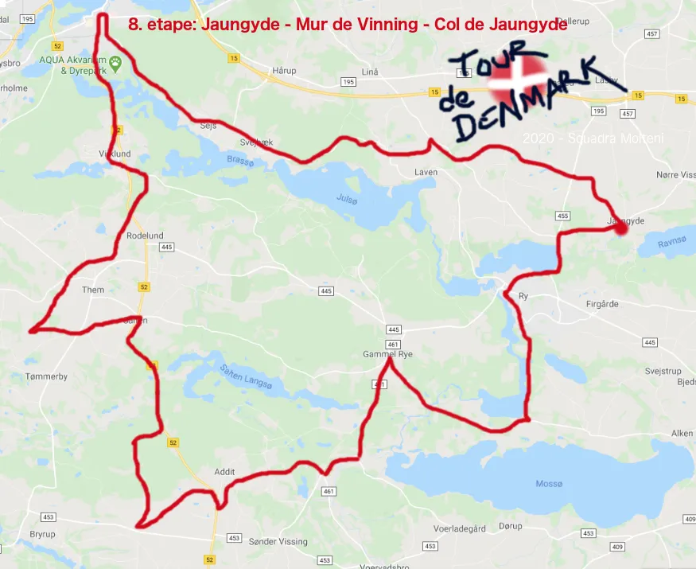
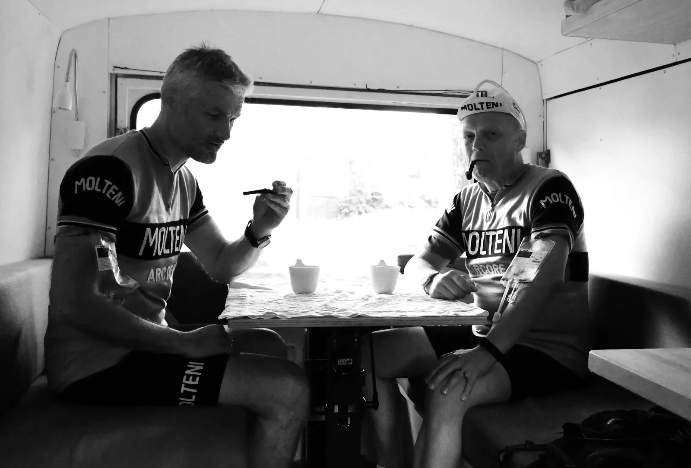
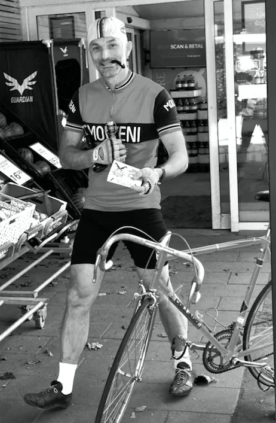
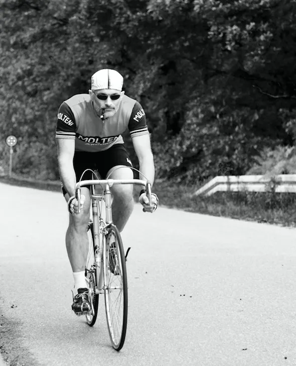
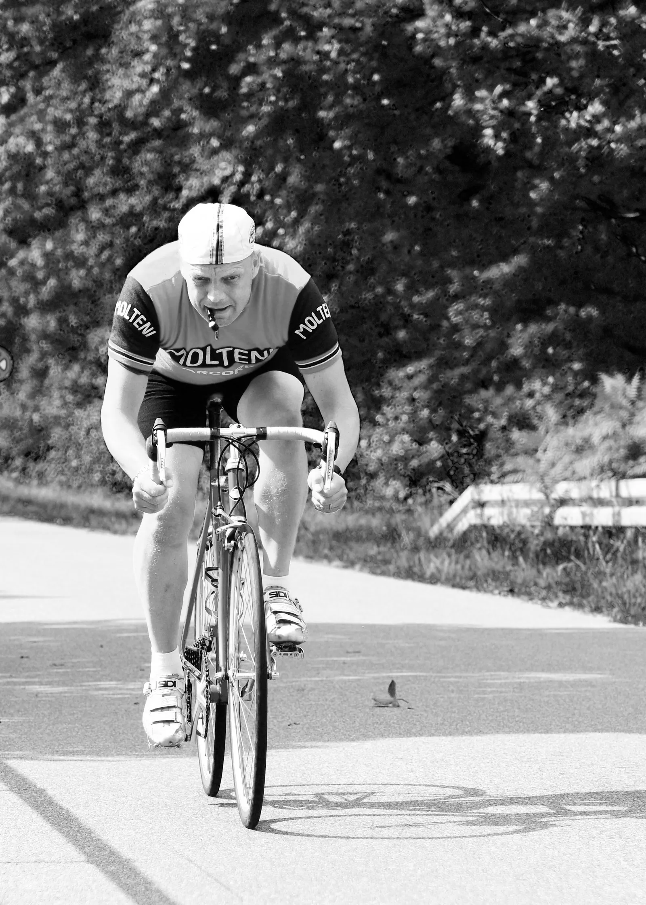
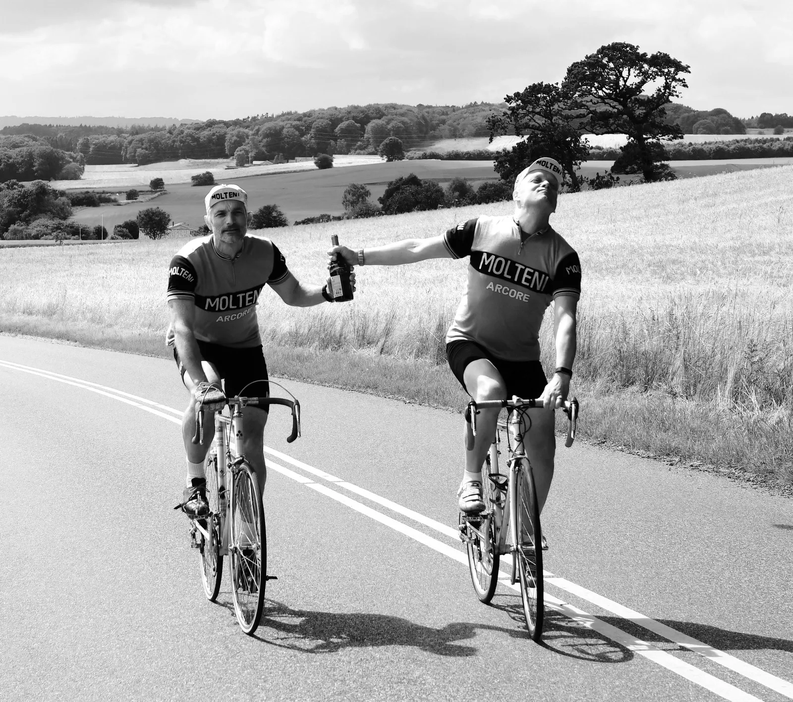

8. etape: Jaungyde – Mur de Vinning – Col de Jaungyde – apokalypsen i Søhøjlandet

7. etape, Jaungyde – Mur de Vinning – Col de Jaungyde, på 72 km og 700 højdemeter på virkede på papiret meget overskueligt for feltets ryttere. Aldrig havde de taget så meget fejl. Squadra Moltenis Grane Maaløe og Jens Stærk var topmotiverede op til etapens start i hjembyen Jaungyde, som også var dagens målby. Kaptajn Bjørnsten havde tildelt duoen frie rammer til at lave stort.


Etapestart:
I timerne op til starten havde Grane og Jens fulgt Gianni Bugnos forberedelsesregime, og havde hver indtaget 56 kopper espresso bag i Hy-holdbussen. Kaptajn Bjørnsteens årvågne rekognoscering blandt de nærmeste konkurrenter i startområdet, viste som forventet, at der var blanke øjne og et overdrevent højt væskeforbrug over hele linien – det klassiske tegn på, at der var indtaget lidt for store mængder smertedæmpende amfetamin på de foregående 6 etaper, hvor hele feltet havde lidt under Moltenis ubønhørlige pres og ubrudte sejrsrække.


Regnen silede ned, det blæste hårdt fra vest, og der var udsigt til hagl, slud og torden på rutens skovklædte bakketoppe i det kuperede Søhøjland. Grane og Jens vidste af egne dyrkøbte erfaringer, at efterveerne af overdreven amfetamin-indtag ville give stive morgenben og flimrende syn hos konkurrenterne. Løbsstrategien var at følge Moltenis velkendte og gennemprøvede taktik, grundlagt af Eddy Merckx selv i 1968: angrib fra start i højre og venstre side af vejen, mens konkurrenterne skutter sig i kulden under regntøjet i fejlagtig forventning om en blød rullestart og piano-kørsel. Resten af Molteni-holdet var klar til at bakke af forrest i feltet.
Attaques, attaques!!
Lyden af startskuddet foran Jaungyde forsamlingshus blev dæmpet af den tunge regn. Mørke skyer indhyllede Kielsgaard-stigningen og skjulte glimtene fra lyn- og tordenvejret mod sydvest. Mens rytterne strammede pedal-stropperne og sejlende fik gang i de knirkende cykler, skød de to espresso-raketter fra Molteni Grane og Jens ud af feltet og ind på stigningen ud af Jaungyde ”en danseuse” i 55×13. Den 2 kilometer lange 5% stigning mod Vennely blev forceret med 48 km/t, mens det meste af feltet skreg og bandede i frustration og uden held forsøgte at få de stive ben til at makke ret. Kun en enkelt rytter fra team Peugeot Recycled fulgte med på hjul, indtil han udgik med defekt. Resignationen spredte sig i feltet da de lave regnskyer hurtigt skjulte udbrydernes forspring. Kaptajn Bjørnsteen og Per Sandahl bakkede dygtigt af og kastede mudder i forsøgene på at organisere forfølgelsen.
Belønningen for det flittige espressoindtag og den eksplosive start var 2 minutters forspring efter 5 kilometer. Ligesom Fausto Coppi aldrig blev fanget når han forlod feltet, var Molteni-drengene i færd med at skabe østjysk løbshistorie gennem den uhyggelige forcering.
Efter 20 kilometer i silende regn og brølende modvind mod Silkeborg – og med konstant sortnen for øjnene, lettede Grane trykket på pedalerne til 7-800 watt, og Jens satte sig i front til en dingerføring mod syd – gennem Silkeborg, Virklund og ud på det gamle jernbanespor mod Bryrup – en sløjfe tilbage gennem Them og hen mod den udmarvende stigning mod Vinning.
Apokalypsen på Mur de Vinning
På stigningen mod Vinning udviklede vejret sig dramatisk, med slagregn, hagl, slud og torden fra en sortgrå himmel. Vejen var dækket af et tommetykt lag af hagl, men Grane og Jens flød stabilt gennem uvejret takket være arme og ben, indsmurt i et hemmeligt miks af kamfer, svinefedt og tabasco. Det var endnu en taktisk genistreg grundlagt bag i holdbussen, efter dygtig belæring i ”Teorie und Praktisch wegen Hypotermie im Radfahren” og efter strenge indsmøringsdessiner fra holdlæge Finn Birk.
Tilbage i feltet var konkurrenterne i dyb krise, mens resten af Molteni holdt en halv afspadseringsdag. Duoens forspring på 16 minutter på toppen af Vinning-bakken var knusende for moralen. De stive beni feltet, som ellers var begyndt at løsne op omkring Silkeborg, krampede nu i den ubarmhjertede kulde og haglstormen i Søhøjlandets tynde luft. På nedkørslen i hagl, regn og tåge var der flere alvorlige styrt i feltet, og turen mod Gl. Ry fik flere favoritter til at trække sig tilbage til holdbilerne med opgivende miner og tårer i øjnene. Team Gios Brooklyn var desværre igen indblandet i en alvorlig hændelse i et venstresving på den spejlglatte nedkørsel.
Krise i front
I Gl. Ry oplevede Grane og Jens en begyndende, kollektiv træthed. De 56 kopper espresso var hamret ud gennem pedalerne, og manden med bonk-hammeren lå lige i baghjulet med truslen om pludselig fatigue.
En hurtig beregning i Granes binære Ingeniør-hjerne viste, at det ville være fordelagtigt at søge depot i Gl. Ry Brugs, som under uddelerens højlydte protester resolut blev plyndret for belgisk øl og lakridspiber.


Duoen tømte hurtigt en flaske Leffe, kastede sig i sadlen, sprintede ud af Gl. Ry med fornyede kræfter, og lakridspiber i mundvigen. De krydsede Gudenåen ved Emborgbroen, hvor de blev noteret for en knapt tilladelig hastighedt påVagn betjents trebenede fotofælde, i retning mod Ry.




En flaske cognac og sikker dobbeltsejr
Molteni-drengenes sidste genistreg var bestillingen sendt per fax fra holdbussen til Thomas på Hotel Ry. Thomas stod klar med mousetter fyldt af frisklavede pommes frites, aioli og en flaske cognac mod søndagskulden. Med 18 minutters forspring løsnede Grane og Jens pedalstropperne en anelse, for at få blod til fødderne og tog hul på de sidste 5 km mod den afsluttende stigning og målet på toppen af Col de Jaungyde. Med vinden og spæd sol i ryggen, var der tid til at løsne musklerne op og dele resten af cognac-flasken på den afsluttende stigning.


De ellevilde tifosi var strømmet til målområdet efter at have fulgt dramaet via Radio Molteni på deres skrattende transistorradioer. Solen fandt vej gennem regnskyerne, da duoen nærmede sig mål.
Efter 72 km i et vaskeægte tomands ”Trofeo Baracchi”-udbrud, rullede Grane Wunderbein Maaløe og Jens Stærk Bojesen over målstregen i fælles triumf. 15 minutter senere rullede et decimeret felt ind over målstregen.
Holdets taktik til fulde lykkes gennem god forberedelse, aggressiv kørsel og veltilrettelagt bakken af i feltet. Vi kan sætte kryds ved endnu en tilfredsstillende etapesejr i årets udgave af Molteni Danmark Rundt! Nu vil vi løsne benene op og fejre succesen med stegt flæsk og belgisk øl i holdbussen, udtaler Kaptajn Niels Bjørnsteen udtaler efter etapen.
Forza Grane og Jens
Forza Molteni
8. Etape Jaungyde – Mur de Vinning – Col de Jaungyde
1. Grane Wunderbein Maaløe, Squadra Molteni
2. Jens Stærk Bojesen, Squadra Molteni
Klassement:
1. Grane Wunderbein Maaløe, Squadra Molteni
2. Jens Stærk Bojesen, Squadra Molteni
3. Lars Munch Larsen, Squadra Molteni
4. Per Sandahl, Squadra Molteni
5. Jens Langergaard, Squadra Molteni
6. Kristian Blume, Squadra Molteni
7. Svend Seegert, Squadra Molteni
8. Niels Bjørnsteen, Squadra Molteni
Hold:
1. Squadra Molteni